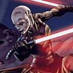

Forums galactiques > Taverne galactique : lieu de discussion informel > Korolev
| Le Troll Réputation à la taverne : 75  24/05 ETU 16:33 | Score : 0 Détails "Se rend à l'armurier"
-J'aimerais le Fusil de sniper X5V89 28 mm, avec des balles de même calibre au mercure. J'aimerais aussi des grenades anti-char B3, et plus simplement, une double morgenstern énergétique. | ||
| Vincenzo Rimi Réputation à la taverne : 362  24/05 ETU 16:34 | Score : 0 Détails Vincenzo s'arrêta devant le Korolev que Renato venait d'ouvir.Il eut un grand sourire et entra à l'intérieur.
Il se dirigea vers l'armurie. "Faut pas demander comment il a eu ça." Il prit une fusil à pompe laser le plus proche et fit un trou énorme dans la cible. "Cool!Eh Renato!Je te l'achète celui là!" | ||
| Le Troll Réputation à la taverne : 75 24/05 ETU 16:39 | Score : 0 Détails Sans, merci.
"Le Troll prends son nouveau sniper et dégomme la tête de la cible, pourtant il avait visé le pied ... | ||
| le renard Réputation à la taverne : -20  24/05 ETU 16:39 | Score : 0 Détails je voudrais une bombe c4 deguisé en renard et mobile
| ||
| Zangdar Réputation à la taverne : -34  24/05 ETU 16:41 | Score : 0 Détails Zangdar:bonjour
Renato Mandalore:oui que puije pour vous Zangdar:me tenir ca "alors que Zangdar resortit, prétendent demander a sa femme ce quelle préfers, Renato Mandalore continuait de tenir les deux caisses de c4, abillement déguisées en mouton, après 20km de marche, Zangdar appuya sur un bouton, par un hasard stupéfiant, le magasin de Renato Mandalore explosa pour des raison encors inconnu" Zangdar:mais c'est du vole!!!!!!!!! | ||
| Vincenzo Rimi Réputation à la taverne : 362 24/05 ETU 16:43 | Score : 0 Détails Vincenzo répliqua.
"T'avais qu'à mettre un panneau pour indiquer la salle de tir!Voyons cela" Il passa devant les rayons d'armes et trouva un pistolet léger avec une unique balle. "Pff,il a pas honte de vendre ça?" Il essaiya le pistolet sur une cible,Vincenzo fut surpris car la cible vola en éclats en répandant des flammes. "J'ai rien dis,mais si il y avait plus de balles." | ||
| le renard Réputation à la taverne : -20 24/05 ETU 16:44 | Score : 0 Détails le renard affoler fit exploser alors la bombe c4 deguisé en renard
| ||
| Le Troll Réputation à la taverne : 75 24/05 ETU 16:44 | Score : 0 Détails Renato, je peux vous aidez à le dégommer si vous souhaitez !
"Le Troll pris son nouveaux sniper et tira dans le pied de Zangdard, et même si il avait visé la tête, il l'avait touché. Ensuite, il choisit une des balles spéciales au mercure et tira sur Zangdar. Le malheureux la reçu dans le dos, et cria au Troll : " Je me vengerai ! " avant que Renato, prennant un lance-missiles, ne lui tire dessus. Il n'aurai plus l'occasion de se venger ! | ||
| Le Troll Réputation à la taverne : 75 24/05 ETU 16:48 | Score : 0 Détails Merci à vous Renato. Je pense que vous aimez l'alcool à brûler, non ? Si oui, mon bar vous est ouvert !
"Se faisant masser le dos" -Ca, c'est du bonheur ! | ||
| Vincenzo Rimi Réputation à la taverne : 362 24/05 ETU 18:45 | Score : 0 Détails "Eh Renato! Il est puissant ce lance missile?"
Vincenzo appuya accidentellement sur la détente,et le missile alla accidentellement exploser contre un mur,faissant accidentellement un trou. En voyant l'air assassin de Renato,Vincenzo dit: "heu si je te dis que j'ai fais ça par accident?" | ||
| le renard Réputation à la taverne : -20 24/05 ETU 18:47 | Score : 0 Détails le renard derriere le mur se fit exploser...
apres regeneration il dit : "non mais c'est qui le %µ£ qui ma tiré dessus ?" sortant ses griffe explosifes pres a lancer | ||
| Mandalores Réputation à la taverne : 4  25/05 ETU 11:10 | Score : 0 Détails Je voudrais une M1A1, lance-grenade, mortier lourds de 120 et un lance pierre.
| ||
| Seigneur vador Réputation à la taverne : 280  25/05 ETU 11:17 | Score : 0 Détails 1 paquet de 100 grenades ionique a explosion programmable
5 roquette sol-eszpace anti-croiseur avec les lance roquettes adequats 90 DCA laser avec reconnaissance de cible 80 sniper DC-14 modele impérial avec scanner vital 40 fusil electromagnetiques 600 caisse de chargeur pour toutes les armes citées et 1 fusil DC-32 avec mode de tir programmable tout ca pour usage personnel,et tous ca en paquets cadeaux | ||
| Seigneur vador Réputation à la taverne : 280 25/05 ETU 11:32 | Score : 0 Détails hum...service rapide j'aime ca...en attendant j'essaie un des fusils...
vador prit un des fusils sniper,visa le troll ###scannerisation en cour### cible:le troll race:troll distance:123m chance d'atteindre le coup:99.99% état de la cible:en pleine santé ###fin de scannerisation### Vador tira et atteignit le peid du troll qui beugla... "oups je croit que je ne vais pas m'attarder..." | ||
| Mandalores Réputation à la taverne : 4 25/05 ETU 11:53 | Score : 0 Détails Je désire :
- 1000 caisses de mortiers avec des explosifs Mark 5 ! - 1 chasseur Triton et tous son armement, - 1 Wampa, - 1 lance pierre, - 1lance-flamme téléguidés ! | ||
| Vecna Réputation à la taverne : 423  25/05 ETU 11:53  | Score : 0 Détails Les yeux infrarouge de vecna se mirent en action
| ||
| le renard Réputation à la taverne : -20 25/05 ETU 11:53 | Score : 0 Détails je corrige
Les hauts parleurs du Korolev se mirent en action normal il avait vu des lcl | ||
| Arigliano Arguello Réputation à la taverne : 560  27/05 ETU 11:18 | Score : 0 Détails /+/+/+/+/+/+/+/+/+/+/+/+/+/+/+/+/+/+/+/+/+/+/+/
Après les ... déboires dont avaient été victimes certains commandants présents dans le Koronev, Arigliano s'approcha de Renato et lui demanda. /+/+/+/+/+/+/+/+/+/+/+/+/+/+/+/+/+/+/+/+/+/+/+/ " J'aimerais beaucoup utiliser ta salle d'entraînement en urbain contre des droïdes Mark IV réglages optimaux avec capacité de réflexe de 0.32, c'est possible ? Tu me les programmes pour une mission de protection d'un dignitaire. J'espère que j'aurais le droit d'en casser quelqu'uns. Ah j'oubliais, trouve moi anche un droïd dignitaire. Il faut bien que mon entraînement ait un but." /+/+/+/+/+/+/+/+/+/+/+/+/+/+/+/+/+/+/+/+/+/+/+/ Il sourit puis patienta quelques secondes. Lorsque Renato lui fit d'entrer, il était prêt. Il entra dans la pièce d'entraînement. La porte se referma. /+/+/+/+/+/+/+/+/+/+/+/+/+/+/+/+/+/+/+/+/+/+/+/ | ||
| athéna Réputation à la taverne : 97  27/05 ETU 13:29 | Score : 0 Détails maintenant place a la fète pour le mariage
| ||
| dark maul Réputation à la taverne : 13  27/05 ETU 13:32 | Score : 0 Détails VIVE LES MARIES LA FETE LES BOISSONS GRATUITE SUR LE COPTOIRE ET VIVE LES CHAPS !!!!!!!!!!!!
|
Forums galactiques > Taverne galactique : lieu de discussion informel > Korolev